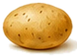

Cheese and Gallstones: Which Cheeses Are Safe to Eat?
Cheese is one of the foods people miss most after a gallstones diagnosis. You don't have to give it up, but it helps to know which cheeses are light, which are heavy, and how much is sensible.

 Get the printable list of cheeses and dairy to choose or avoid. Get the free Gallstones Fridge Guide →
Get the printable list of cheeses and dairy to choose or avoid. Get the free Gallstones Fridge Guide →
Why cheese can trigger gallstone pain
Most hard cheeses are about one-third fat. That means a generous chunk of cheddar, a cheese sandwich made with thick slices, or a plate of cheesy pasta can deliver a lot of fat in one go. Fat is what makes your gallbladder squeeze, and if a stone is in the way, that squeeze can be painful.
The fix isn't cutting out cheese completely. It's choosing lighter cheeses most of the time and keeping full-fat cheese to small portions. A 30g portion of hard cheese, about the size of a small matchbox, is the standard serving size used in UK healthy-eating advice.
Cheese fat chart: lightest to heaviest
| Cheese | Fat per 100g | Fat per 30g | Verdict |
|---|---|---|---|
| Quark | under 0.5g | almost none | Green |
| Cottage cheese, low-fat | about 1.5g | under 0.5g | Green |
| Cottage cheese, standard | about 4g | about 1g | Green |
| Mozzarella, half-fat | about 10g | about 3g | Amber |
| Feta | about 20g | about 6g | Amber |
| Mozzarella, standard | about 20g | about 6g | Amber |
| Reduced-fat cheddar | about 22g | about 6.5g | Amber |
| Halloumi | about 25g | about 7.5g | Red |
| Brie and camembert | about 27 to 29g | about 8.5g | Red |
| Parmesan | about 29g | about 9g | Amber (you use very little) |
| Cheddar | about 34g | about 10g | Red |
| Stilton and other blue cheese | about 35g | about 10.5g | Red |
Figures are typical values and vary by brand. Check the label for the fat per 100g.
Parmesan is a useful exception. It's high in fat, but it's so strongly flavoured that a teaspoon or two grated over pasta goes a long way.
Easy cheese swaps




Tips for getting more flavour from less cheese
- Choose strong cheese. Mature or extra mature cheddar has more flavour, so you need less of it.
- Grate it, don't slice it. Grated cheese spreads further than slices.
- Put it on top. Cheese sprinkled on top of a dish, where you can see and taste it, goes further than cheese stirred into a sauce.
- Weigh it once. Weigh out 30g one time so you know what a portion looks like.
- Make lighter sauces. For cauliflower cheese or lasagne, make the sauce with skimmed milk and a small amount of strong cheese, and add mustard for extra flavour.
Cheese during a flare-up
During a flare-up, it's best to avoid most cheese and stick to plain, gentle food. A spoonful of low-fat cottage cheese or quark is usually the only cheese worth trying on a bad day. Bring other cheeses back slowly once you feel better, starting with small portions of the lighter ones.
The bottom line
Cheese can stay in your diet. Make cottage cheese, quark and reduced-fat cheeses your everyday choices, keep full-fat cheese to a matchbox-sized portion, and choose strong flavours so a little goes further.
When to get help straight away
Get urgent advice from your GP or NHS 111 if tummy pain lasts longer than 30 minutes. Call 999 or go to A&E if you have:
- sudden, severe tummy pain
- pain spreading to your back, with vomiting
- a very high temperature, or you feel hot, cold or shivery
- yellow skin or yellowing in the whites of your eyes
Don't drive yourself. No food or drink on this site replaces medical care.
Questions people ask
Can I eat cheese with gallstones?
Yes, in small amounts. Most hard cheeses are about a third fat, so keep portions to around 30g, about the size of a small matchbox. Cottage cheese, quark and reduced-fat cheeses are much lighter choices.
What is the best cheese for gallstones?
Quark and low-fat cottage cheese are the lightest options, with very little fat. Reduced-fat cheddar, half-fat mozzarella and light soft cheese are good middle-ground choices.
Is cottage cheese good for gallstones?
Yes. Cottage cheese is high in protein and much lower in fat than other cheeses, especially the low-fat versions. It's a good swap for cheddar in sandwiches and on jacket potatoes.
Is cheese on toast OK with gallstones?
A thin slice of reduced-fat cheese on toast, with no butter underneath, is fine for many people. A thick layer of full-fat cheddar on buttered toast is a much heavier snack.
Can I eat pizza with gallstones?
Pizza is often a trigger because of the amount of cheese and fatty toppings like pepperoni. A thin-crust pizza with vegetable toppings and half the usual cheese is a lighter choice.
Is halloumi OK with gallstones?
Halloumi is about a quarter fat, and it's usually fried, which adds more. Grill a small portion instead, or swap it for grilled tofu or chicken.
More food guides
 Foods to avoid with gallstonesThe complete list of common triggers, with easy swaps.
Foods to avoid with gallstonesThe complete list of common triggers, with easy swaps. Fried food and gallstonesThe number one trigger, and how to keep the crunch.Milk and gallstonesWhole, skimmed or oat? Every milk compared.
Fried food and gallstonesThe number one trigger, and how to keep the crunch.Milk and gallstonesWhole, skimmed or oat? Every milk compared. Eggs and gallstonesWhy the white and the yolk get different verdicts.
Eggs and gallstonesWhy the white and the yolk get different verdicts. Bananas and gallstonesOne of the safest fruits you can eat, even on a bad day.
Bananas and gallstonesOne of the safest fruits you can eat, even on a bad day. Alcohol and gallstonesWhat the research says, drink by drink.
Alcohol and gallstonesWhat the research says, drink by drink. The complete gallstones dietEvery food sorted into choose, limit and avoid.
The complete gallstones dietEvery food sorted into choose, limit and avoid. Gallbladder painWhere it hurts, what triggers it and when to get help.
Gallbladder painWhere it hurts, what triggers it and when to get help.